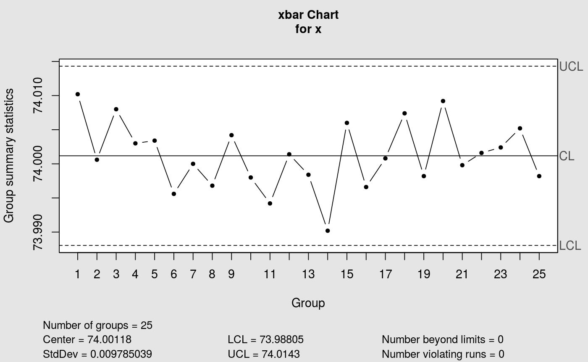

X-bar Shewhart Control Chart for phase II.
Builds the x-bar control chart for phase II.
cchart.Xbar2(x, x2bar, sigma, sizes)
Arguments
| x | The data to be plotted. |
|---|---|
| x2bar | The mean of means. |
| sigma | The standar deviation of the data. |
| sizes | A value or a vector of values specifying the sample sizes associated with each group. |
Value
Return a x-bar control chart for phase II.
Details
To use this function it is necessary to have the output given by the function XbarI.
See also
Examples
cchart.Xbar2(pistonrings[26:40, ], stat[[1]][1], stat[[1]][2])#> List of 11 #> $ call : language qcc(data = x, type = "xbar", center = x2bar, std.dev = sigma) #> $ type : chr "xbar" #> $ data.name : chr "x" #> $ data : num [1:15, 1:5] 74 74 74 74 74 ... #> ..- attr(*, "dimnames")=List of 2 #> $ statistics: Named num [1:15] 74 74 74 74 74 ... #> ..- attr(*, "names")= chr [1:15] "26" "27" "28" "29" ... #> $ sizes : Named int [1:15] 5 5 5 5 5 5 5 5 5 5 ... #> ..- attr(*, "names")= chr [1:15] "26" "27" "28" "29" ... #> $ center : num 74 #> $ std.dev : num 0.00979 #> $ nsigmas : num 3 #> $ limits : num [1, 1:2] 74 74 #> ..- attr(*, "dimnames")=List of 2 #> $ violations:List of 2 #> - attr(*, "class")= chr "qcc"